(up to last 14 days)
Daily view
Last update: 18 Apr 2026, 16:41 CEST
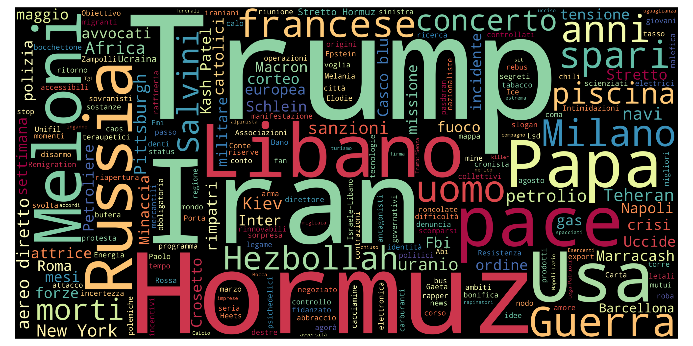
| Term | Frequency |
|---|---|
| iran | 11 |
| trump | 8 |
| hormuz | 8 |
| libano | 5 |
| usa | 5 |
| attore | 4 |
| anno | 4 |
| milano | 4 |
| francese | 3 |
| guerra | 3 |
| Term | Frequency |
|---|---|
| casco blu | 2 |
| stretto hormuz | 2 |
| blocco navale | 2 |
| Term | Current day frequency |
|---|---|
| milano | 4 |
| teheran | 3 |
| forza | 3 |
| incidente | 3 |
| hezbollah | 3 |
| francese | 3 |
| piscina | 3 |
| spare | 2 |
| ordine | 2 |
| negoziato | 2 |
| Term | Difference | Current day frequency | Previous day frequency |
|---|---|---|---|
| hormuz | 5 | 8 | 3 |
| attore | 3 | 4 | 1 |
| uranio | 2 | 3 | 1 |
| sanzione | 2 | 3 | 1 |
| petrolio | 1 | 2 | 1 |
| democrazia | 1 | 2 | 1 |
| anno | 1 | 4 | 3 |
| crisi | 1 | 2 | 1 |
| maggio | 1 | 2 | 1 |
| lavoro | 1 | 2 | 1 |
| Term | Difference | Current day frequency | Previous day frequency |
|---|---|---|---|
| meloni | -8 | 3 | 11 |
| trump | -5 | 8 | 13 |
| iran | -5 | 11 | 16 |
| mondo | -5 | 1 | 6 |
| tregua | -4 | 1 | 5 |
| pronto | -3 | 1 | 4 |
| nave | -3 | 3 | 6 |
| transizione | -2 | 1 | 3 |
| parte | -2 | 1 | 3 |
| presidente | -2 | 1 | 3 |
| Term | Frequency |
|---|---|
| mandelson | 11 |
| iran | 9 |
| london | 6 |
| strait | 5 |
| hormuz | 5 |
| jewish | 4 |
| trump | 4 |
| starmer | 3 |
| medium | 3 |
| car | 3 |
| Term | Frequency |
|---|---|
| ex foreign office chief | 4 |
| ex foreign office | 4 |
| london arson attack | 3 |
| counter terror police | 3 |
| arson attack | 3 |
| mandelson security row | 2 |
| mandelson mess | 2 |
| hungary next pm | 2 |
| sabrina carpenter | 2 |
| nathalie baye | 2 |
| Term | Current day frequency |
|---|---|
| ex foreign office | 4 |
| ex foreign office chief | 4 |
| counter terror police | 3 |
| london arson attack | 3 |
| hungary | 3 |
| arson attack | 3 |
| north west london | 2 |
| diplomatic service | 2 |
| premise | 2 |
| french | 2 |
| Term | Difference | Current day frequency | Previous day frequency |
|---|---|---|---|
| strait | 3 | 5 | 2 |
| car | 2 | 3 | 1 |
| london | 1 | 6 | 5 |
| bus | 1 | 2 | 1 |
| voter | 1 | 2 | 1 |
| document | 1 | 2 | 1 |
| role | 1 | 2 | 1 |
| child | 1 | 2 | 1 |
| study | 1 | 2 | 1 |
| driver | 1 | 2 | 1 |
| Term | Difference | Current day frequency | Previous day frequency |
|---|---|---|---|
| mandelson | -10 | 11 | 21 |
| starmer | -8 | 3 | 11 |
| price | -7 | 1 | 8 |
| iran | -6 | 9 | 15 |
| olly robbins | -5 | 2 | 7 |
| summer | -2 | 1 | 3 |
| iran war | -2 | 2 | 4 |
| half | -2 | 1 | 3 |
| minister | -1 | 1 | 2 |
| mum | -1 | 1 | 2 |
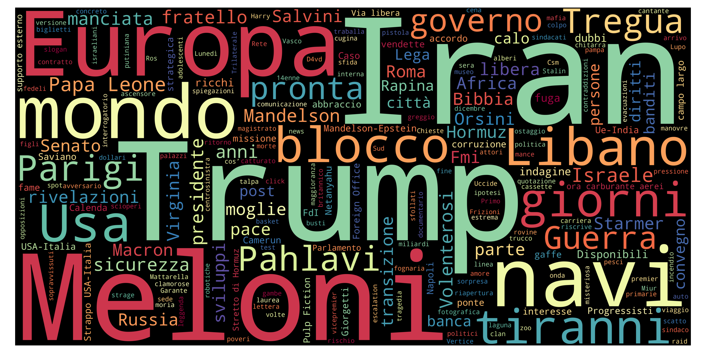
| Term | Frequency |
|---|---|
| iran | 16 |
| trump | 13 |
| meloni | 11 |
| europa | 8 |
| nave | 6 |
| mondo | 6 |
| libano | 6 |
| usa | 6 |
| blocco | 5 |
| giorno | 5 |
| Term | Frequency |
|---|---|
| papa leone | 4 |
| campo largo | 2 |
| pulp fiction | 2 |
| strappo usa | 2 |
| foreign office | 2 |
| carburante aerei | 2 |
| via libera | 2 |
| stretto di hormuz | 2 |
| supporto esterno | 2 |
| Term | Current day frequency |
|---|---|
| iran | 16 |
| trump | 13 |
| meloni | 11 |
| europa | 8 |
| mondo | 6 |
| nave | 6 |
| usa | 6 |
| libano | 6 |
| parigi | 5 |
| pahlavi | 5 |
| Term | Difference | Current day frequency | Previous day frequency |
|---|---|---|---|
| missione | 1 | 2 | 1 |
| accordo | 1 | 2 | 1 |
No significantly decreasing terms.
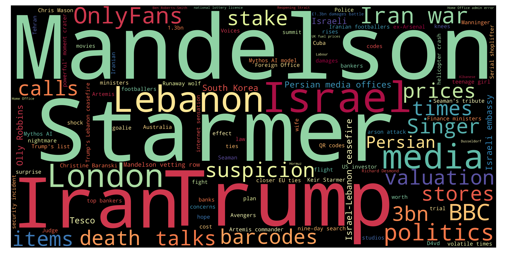
| Term | Frequency |
|---|---|
| mandelson | 21 |
| iran | 15 |
| starmer | 11 |
| price | 8 |
| question | 6 |
| evidence | 6 |
| epsom | 6 |
| hormuz | 6 |
| death | 5 |
| trump | 5 |
| Term | Frequency |
|---|---|
| olly robbins | 7 |
| daniel kinahan | 6 |
| iran war | 4 |
| new york | 3 |
| oil prices | 3 |
| mandelson vetting | 3 |
| international organised crime | 3 |
| cup stadium | 3 |
| hugely inflated prices | 3 |
| peter mandelson | 3 |
| Term | Current day frequency |
|---|---|
| olly robbins | 7 |
| evidence | 6 |
| epsom | 6 |
| daniel kinahan | 6 |
| police | 4 |
| protest | 4 |
| irish | 3 |
| officer | 3 |
| fan | 3 |
| cup stadium | 3 |
| Term | Difference | Current day frequency | Previous day frequency |
|---|---|---|---|
| mandelson | 14 | 21 | 7 |
| question | 5 | 6 | 1 |
| starmer | 5 | 11 | 6 |
| death | 4 | 5 | 1 |
| thousand | 3 | 4 | 1 |
| hormuz | 3 | 6 | 3 |
| bill | 3 | 4 | 1 |
| jewish | 2 | 4 | 2 |
| summer | 2 | 3 | 1 |
| link | 2 | 3 | 1 |
| Term | Difference | Current day frequency | Previous day frequency |
|---|---|---|---|
| trump | -8 | 5 | 13 |
| iran war | -6 | 4 | 10 |
| car | -4 | 1 | 5 |
| price | -3 | 8 | 11 |
| boss | -3 | 2 | 5 |
| bbc | -3 | 3 | 6 |
| medium | -2 | 3 | 5 |
| london | -2 | 5 | 7 |
| cost | -2 | 1 | 3 |
| shortage | -2 | 1 | 3 |
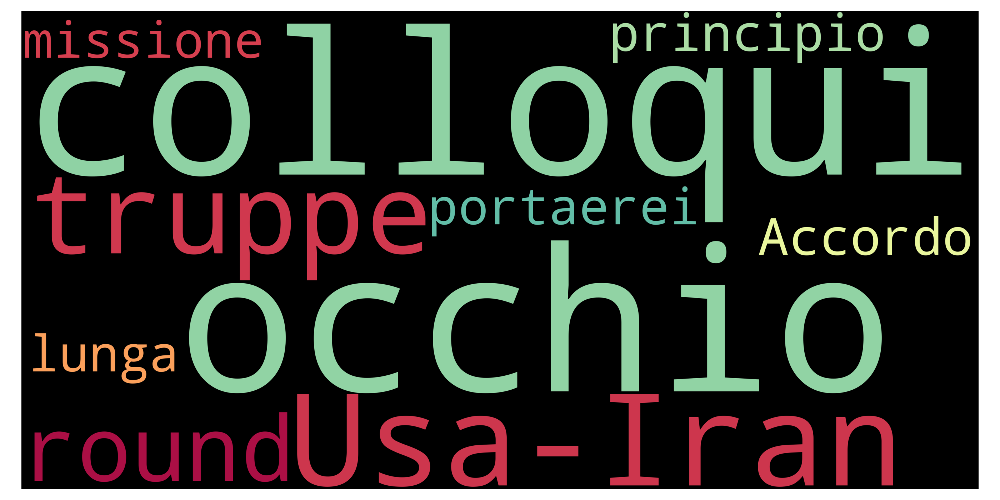
| Term | Frequency |
|---|---|
| colloquio | 1 |
| occhio | 1 |
| usa-iran | 1 |
| truppa | 1 |
| round | 1 |
| principio | 1 |
| accordo | 1 |
| portaerei | 1 |
| lungo | 1 |
| missione | 1 |
No phrases found for this day.
| Term | Current day frequency |
|---|---|
| lungo | 1 |
| missione | 1 |
| round | 1 |
| principio | 1 |
| occhio | 1 |
| usa-iran | 1 |
| truppa | 1 |
| portaerei | 1 |
No significantly increasing terms.
| Term | Difference | Current day frequency | Previous day frequency |
|---|---|---|---|
| colloquio | -2 | 1 | 3 |
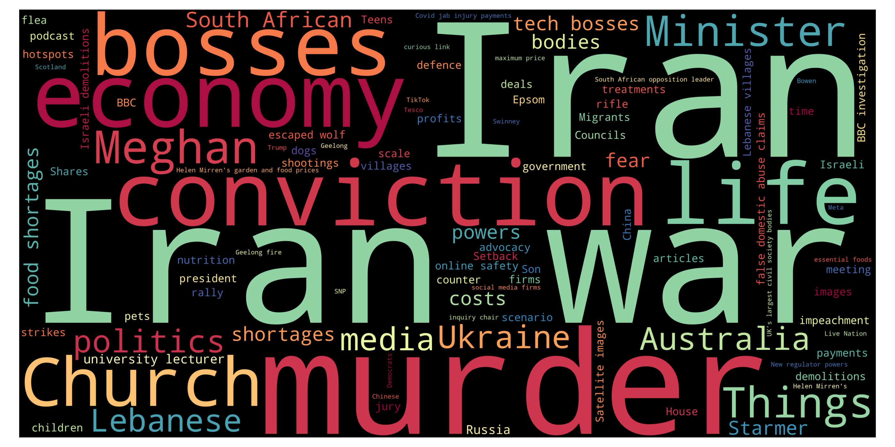
| Term | Frequency |
|---|---|
| iran | 16 |
| trump | 13 |
| price | 11 |
| mandelson | 7 |
| london | 7 |
| government | 6 |
| train | 6 |
| bbc | 6 |
| pope | 6 |
| starmer | 6 |
| Term | Frequency |
|---|---|
| iran war | 10 |
| alex manninger | 4 |
| former arsenal goalkeeper alex manninger | 4 |
| food shortages | 3 |
| university lecturer | 3 |
| south african | 3 |
| rfk jr | 3 |
| foreign office | 2 |
| home office | 2 |
| extraordinary feat | 2 |
| Term | Current day frequency |
|---|---|
| mandelson | 7 |
| train | 6 |
| government | 6 |
| car | 5 |
| conviction | 4 |
| former arsenal goalkeeper alex manninger | 4 |
| tyrant | 4 |
| murder | 4 |
| vaccine | 4 |
| migrant | 4 |
| Term | Difference | Current day frequency | Previous day frequency |
|---|---|---|---|
| price | 9 | 11 | 2 |
| pope | 4 | 6 | 2 |
| starmer | 3 | 6 | 3 |
| boss | 2 | 5 | 3 |
| shortage | 2 | 3 | 1 |
| minister | 2 | 3 | 1 |
| reform | 2 | 3 | 1 |
| israel | 2 | 4 | 2 |
| farage | 1 | 2 | 1 |
| london | 1 | 7 | 6 |
| Term | Difference | Current day frequency | Previous day frequency |
|---|---|---|---|
| iran | -12 | 16 | 28 |
| labour | -5 | 2 | 7 |
| israeli | -5 | 2 | 7 |
| talk | -4 | 1 | 5 |
| time | -3 | 3 | 6 |
| fear | -3 | 1 | 4 |
| job | -3 | 3 | 6 |
| iran war | -3 | 10 | 13 |
| leader | -3 | 1 | 4 |
| bbc | -3 | 6 | 9 |
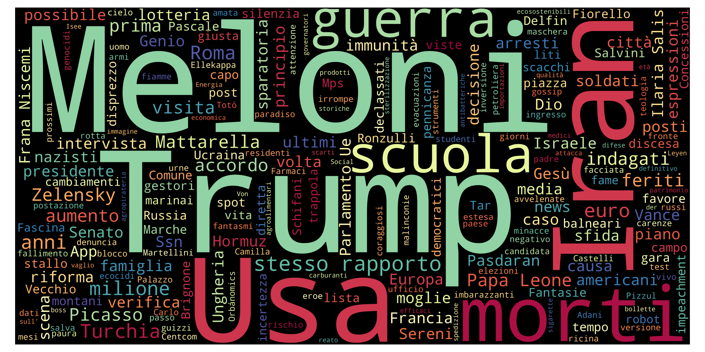
| Term | Frequency |
|---|---|
| meloni | 25 |
| iran | 12 |
| usa | 9 |
| zelensky | 7 |
| mattarella | 7 |
| guerra | 7 |
| scuola | 7 |
| morto | 6 |
| turchia | 6 |
| kiev | 5 |
| Term | Frequency |
|---|---|
| stesso rapporto | 7 |
| papa leone | 3 |
| casa bianca | 3 |
| corte dei conti | 2 |
| strappo usa | 2 |
| necessità strategica | 2 |
| parlamento ue | 2 |
| ilaria salis | 2 |
| a il | 1 |
| Term | Current day frequency |
|---|---|
| zelensky | 7 |
| stesso rapporto | 7 |
| morto | 6 |
| ucraina | 5 |
| kiev | 5 |
| sostegno | 4 |
| potere | 4 |
| papa leone | 3 |
| picasso | 3 |
| casa bianca | 3 |
| Term | Difference | Current day frequency | Previous day frequency |
|---|---|---|---|
| scuola | 4 | 7 | 3 |
| usa | 3 | 9 | 6 |
| possibile | 3 | 4 | 1 |
| euro | 2 | 4 | 2 |
| mondo | 1 | 2 | 1 |
| droga | 1 | 2 | 1 |
| sfida | 1 | 2 | 1 |
| immagine | 1 | 2 | 1 |
| primo | 1 | 3 | 2 |
| governo | 1 | 2 | 1 |
| Term | Difference | Current day frequency | Previous day frequency |
|---|---|---|---|
| trump | -22 | 2 | 24 |
| israele | -7 | 2 | 9 |
| schlein | -6 | 2 | 8 |
| attacco | -5 | 1 | 6 |
| pace | -4 | 1 | 5 |
| rischio | -4 | 1 | 5 |
| difesa | -3 | 1 | 4 |
| democrazia | -2 | 1 | 3 |
| premier | -2 | 1 | 3 |
| anno | -2 | 1 | 3 |
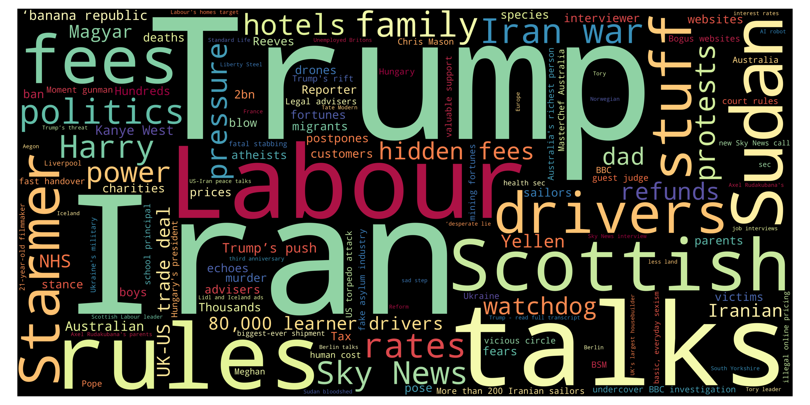
| Term | Frequency |
|---|---|
| iran | 28 |
| trump | 14 |
| bbc | 9 |
| israeli | 7 |
| labour | 7 |
| medium | 6 |
| time | 6 |
| job | 6 |
| london | 6 |
| error | 5 |
| Term | Frequency |
|---|---|
| iran war | 13 |
| attempted arson attack | 7 |
| live nation | 4 |
| downing street | 3 |
| israeli embassy | 3 |
| marwan barghouti | 3 |
| sham lawyers abusing asylum system | 2 |
| legal advisers | 2 |
| lyse doucet | 2 |
| us deal | 2 |
| Term | Current day frequency |
|---|---|
| bbc | 9 |
| attempted arson attack | 7 |
| job | 6 |
| family | 5 |
| error | 5 |
| live nation | 4 |
| leader | 4 |
| sudan | 4 |
| pressure | 4 |
| mistake | 4 |
| Term | Difference | Current day frequency | Previous day frequency |
|---|---|---|---|
| iran | 7 | 28 | 21 |
| medium | 5 | 6 | 1 |
| iran war | 5 | 13 | 8 |
| time | 5 | 6 | 1 |
| trump | 5 | 14 | 9 |
| labour | 5 | 7 | 2 |
| israeli | 5 | 7 | 2 |
| london | 4 | 6 | 2 |
| rule | 4 | 5 | 1 |
| police | 3 | 4 | 1 |
| Term | Difference | Current day frequency | Previous day frequency |
|---|---|---|---|
| imf | -5 | 2 | 7 |
| hotel | -3 | 2 | 5 |
| reeves | -3 | 3 | 6 |
| doctor | -3 | 1 | 4 |
| price | -2 | 2 | 4 |
| risk | -2 | 1 | 3 |
| anger | -2 | 1 | 3 |
| mps | -1 | 2 | 3 |
| barrack | -1 | 1 | 2 |
| harry | -1 | 2 | 3 |
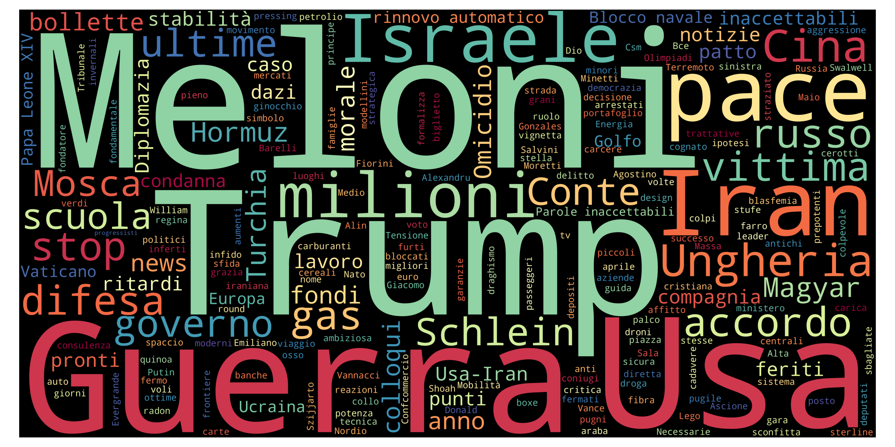
| Term | Frequency |
|---|---|
| meloni | 26 |
| trump | 24 |
| iran | 12 |
| israele | 9 |
| guerra | 8 |
| papa | 8 |
| schlein | 8 |
| conte | 7 |
| camera | 7 |
| mattarella | 6 |
| Term | Frequency |
|---|---|
| forza italia | 5 |
| stretto di hormuz | 3 |
| pimple popper | 2 |
| giovani giornalisti | 2 |
| informazione libera indipendente | 2 |
| prossimi giorni | 2 |
| gas russo | 2 |
| forza costa capogruppo | 2 |
| Term | Current day frequency |
|---|---|
| israele | 9 |
| papa | 8 |
| camera | 7 |
| turchia | 5 |
| forza italia | 5 |
| cina | 5 |
| milione | 4 |
| difesa | 4 |
| allarme | 4 |
| stabilità | 3 |
| Term | Difference | Current day frequency | Previous day frequency |
|---|---|---|---|
| meloni | 18 | 26 | 8 |
| schlein | 5 | 8 | 3 |
| mattarella | 5 | 6 | 1 |
| iran | 5 | 12 | 7 |
| rischio | 4 | 5 | 1 |
| pace | 3 | 5 | 2 |
| usa | 3 | 6 | 3 |
| attacco | 3 | 6 | 3 |
| vittima | 2 | 3 | 1 |
| premier | 2 | 3 | 1 |
| Term | Difference | Current day frequency | Previous day frequency |
|---|---|---|---|
| trump | -3 | 24 | 27 |
| gesù | -3 | 1 | 4 |
| sfida | -3 | 1 | 4 |
| figlio | -3 | 1 | 4 |
| giorno | -2 | 2 | 4 |
| guerra | -1 | 8 | 9 |
| mosca | -1 | 2 | 3 |
| fermo | -1 | 1 | 2 |
| famiglia | -1 | 1 | 2 |
| crisi | -1 | 1 | 2 |
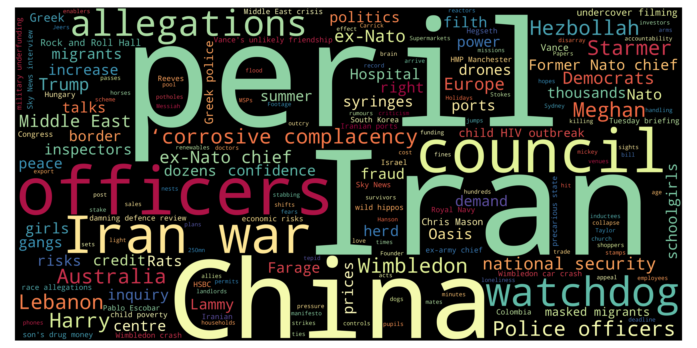
| Term | Frequency |
|---|---|
| iran | 21 |
| trump | 9 |
| imf | 7 |
| talk | 6 |
| reeves | 6 |
| hotel | 5 |
| hormuz | 5 |
| lebanon | 5 |
| economy | 4 |
| port | 4 |
| Term | Frequency |
|---|---|
| iran war | 8 |
| asylum hotels | 3 |
| jd vance | 3 |
| strait of hormuz | 3 |
| hockey stick | 3 |
| home office | 3 |
| global recession | 3 |
| middle east | 3 |
| biggest hit | 2 |
| former nato chief | 2 |
| Term | Current day frequency |
|---|---|
| iran war | 8 |
| imf | 7 |
| reeves | 6 |
| lebanon | 5 |
| hotel | 5 |
| doctor | 4 |
| pensioner | 4 |
| spain | 4 |
| election | 3 |
| middle east | 3 |
| Term | Difference | Current day frequency | Previous day frequency |
|---|---|---|---|
| iran | 10 | 21 | 11 |
| talk | 3 | 6 | 3 |
| demand | 2 | 3 | 1 |
| hundred | 2 | 3 | 1 |
| economy | 2 | 4 | 2 |
| price | 2 | 4 | 2 |
| collapse | 2 | 3 | 1 |
| death | 1 | 4 | 3 |
| ship | 1 | 2 | 1 |
| port | 1 | 4 | 3 |
| Term | Difference | Current day frequency | Previous day frequency |
|---|---|---|---|
| tie | -5 | 1 | 6 |
| trump | -3 | 9 | 12 |
| starmer | -3 | 4 | 7 |
| iranian | -2 | 2 | 4 |
| ally | -2 | 1 | 3 |
| charge | -2 | 1 | 3 |
| rule | -2 | 1 | 3 |
| patient | -1 | 1 | 2 |
| change | -1 | 1 | 2 |
| force | -1 | 1 | 2 |
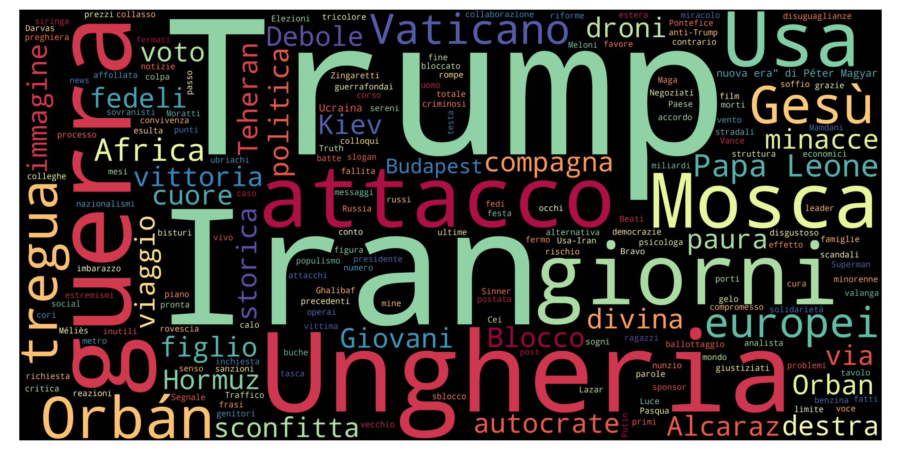
| Term | Frequency |
|---|---|
| trump | 27 |
| guerra | 9 |
| ungheria | 9 |
| meloni | 8 |
| iran | 7 |
| conte | 6 |
| sfida | 4 |
| figlio | 4 |
| post | 4 |
| gesù | 4 |
| Term | Frequency |
|---|---|
| parole inaccettabili | 3 |
| blocco navale | 3 |
| louis prevost | 2 |
| dure parole | 2 |
| péter magyar | 2 |
| cose sbagliate | 2 |
| papa leone xiv | 2 |
| leone xiv | 2 |
| Term | Current day frequency |
|---|---|
| conte | 6 |
| post | 4 |
| gesù | 4 |
| m5s | 3 |
| parole inaccettabili | 3 |
| fratello | 3 |
| orban | 3 |
| attacco | 3 |
| operaio | 2 |
| dure parole | 2 |
| Term | Difference | Current day frequency | Previous day frequency |
|---|---|---|---|
| trump | 18 | 27 | 9 |
| meloni | 4 | 8 | 4 |
| guerra | 4 | 9 | 5 |
| figlio | 3 | 4 | 1 |
| forza | 1 | 2 | 1 |
| fermo | 1 | 2 | 1 |
| parola | 1 | 4 | 3 |
| giorno | 1 | 4 | 3 |
| famiglia | 1 | 2 | 1 |
| tempo | 1 | 2 | 1 |
| Term | Difference | Current day frequency | Previous day frequency |
|---|---|---|---|
| ungheria | -11 | 9 | 20 |
| elezione | -7 | 1 | 8 |
| voto | -3 | 2 | 5 |
| iran | -3 | 7 | 10 |
| pasqua | -3 | 1 | 4 |
| zelensky | -2 | 1 | 3 |
| africa | -2 | 2 | 4 |
| putin | -2 | 1 | 3 |
| usa | -2 | 3 | 5 |
| sconfitta | -1 | 2 | 3 |
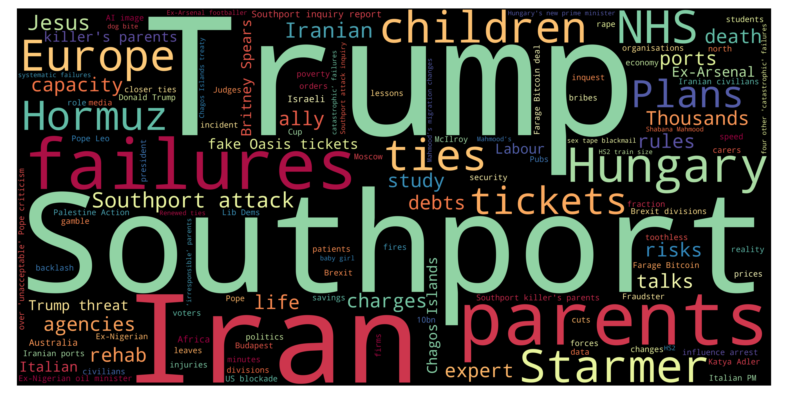
| Term | Frequency |
|---|---|
| trump | 12 |
| southport | 11 |
| iran | 11 |
| parent | 9 |
| failure | 8 |
| hungary | 8 |
| starmer | 7 |
| nhs | 7 |
| tie | 6 |
| child | 6 |
| Term | Frequency |
|---|---|
| southport attack | 4 |
| killer parents | 3 |
| britney spears | 3 |
| trump threat | 3 |
| fake oasis tickets | 3 |
| ex arsenal | 3 |
| chagos islands | 3 |
| southport inquiry | 3 |
| southport killer parents | 2 |
| brexit divisions | 2 |
| Term | Current day frequency |
|---|---|
| southport | 11 |
| parent | 9 |
| failure | 8 |
| nhs | 7 |
| child | 6 |
| iranian | 4 |
| plan | 4 |
| jesus | 4 |
| southport attack | 4 |
| ticket | 4 |
| Term | Difference | Current day frequency | Previous day frequency |
|---|---|---|---|
| tie | 5 | 6 | 1 |
| trump | 4 | 12 | 8 |
| europe | 4 | 6 | 2 |
| starmer | 4 | 7 | 3 |
| hungary | 2 | 8 | 6 |
| politic | 1 | 2 | 1 |
| rule | 1 | 3 | 2 |
| expert | 1 | 3 | 2 |
| australia | 1 | 3 | 2 |
| Term | Difference | Current day frequency | Previous day frequency |
|---|---|---|---|
| iran | -14 | 11 | 25 |
| talk | -5 | 3 | 8 |
| asha bhosle | -2 | 2 | 4 |
| price | -2 | 2 | 4 |
| time | -1 | 1 | 2 |
| question | -1 | 1 | 2 |
| son | -1 | 1 | 2 |
| council | -1 | 1 | 2 |
| predicament | -1 | 1 | 2 |
| naval blockade | -1 | 2 | 3 |
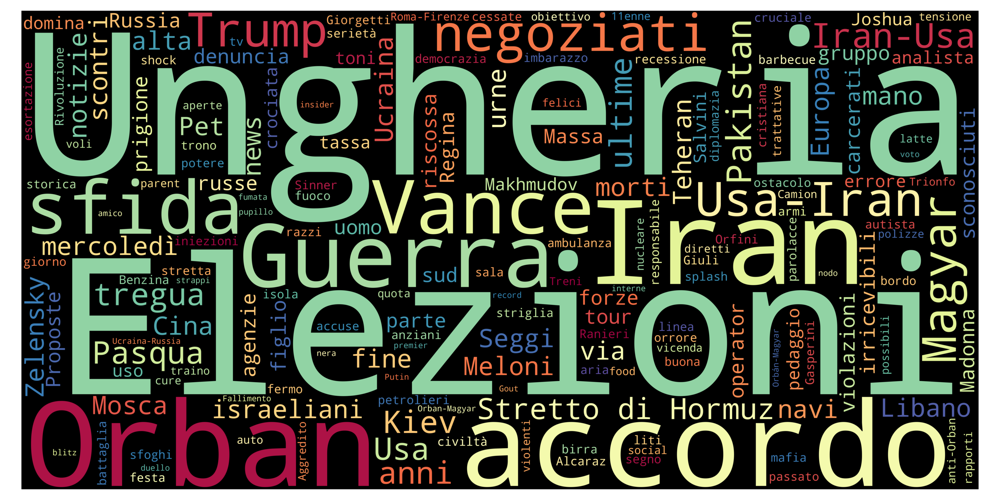
| Term | Frequency |
|---|---|
| ungheria | 20 |
| iran | 10 |
| trump | 9 |
| elezione | 8 |
| elezioni | 7 |
| accordo | 6 |
| guerra | 5 |
| sinner | 5 |
| voto | 5 |
| negoziato | 5 |
| Term | Frequency |
|---|---|
| stretto di hormuz | 4 |
| blocco navale | 3 |
| serie turno | 3 |
| serie a | 3 |
| gas russo | 2 |
| arco di trionfo | 2 |
| monte del tempio | 2 |
| peter magyar | 2 |
| viktor orban campione sovranista | 2 |
| sperona veicolo | 2 |
| Term | Current day frequency |
|---|---|
| elezioni | 7 |
| accordo | 6 |
| kiev | 5 |
| africa | 4 |
| tregua | 4 |
| stretto di hormuz | 4 |
| meloni | 4 |
| pasqua | 4 |
| sconfitta | 3 |
| unifil | 3 |
| Term | Difference | Current day frequency | Previous day frequency |
|---|---|---|---|
| ungheria | 8 | 20 | 12 |
| elezione | 7 | 8 | 1 |
| sinner | 4 | 5 | 1 |
| negoziato | 3 | 5 | 2 |
| sfida | 2 | 4 | 2 |
| anno | 2 | 3 | 1 |
| usa-iran | 2 | 3 | 1 |
| putin | 2 | 3 | 1 |
| numero | 2 | 3 | 1 |
| papa | 2 | 3 | 1 |
| Term | Difference | Current day frequency | Previous day frequency |
|---|---|---|---|
| usa | -4 | 5 | 9 |
| voto | -3 | 5 | 8 |
| terra | -3 | 1 | 4 |
| hormuz | -2 | 3 | 5 |
| astronauta | -2 | 1 | 3 |
| nave | -2 | 2 | 4 |
| primo | -2 | 3 | 5 |
| ucraina | -2 | 2 | 4 |
| iran | -1 | 10 | 11 |
| giovane | -1 | 1 | 2 |
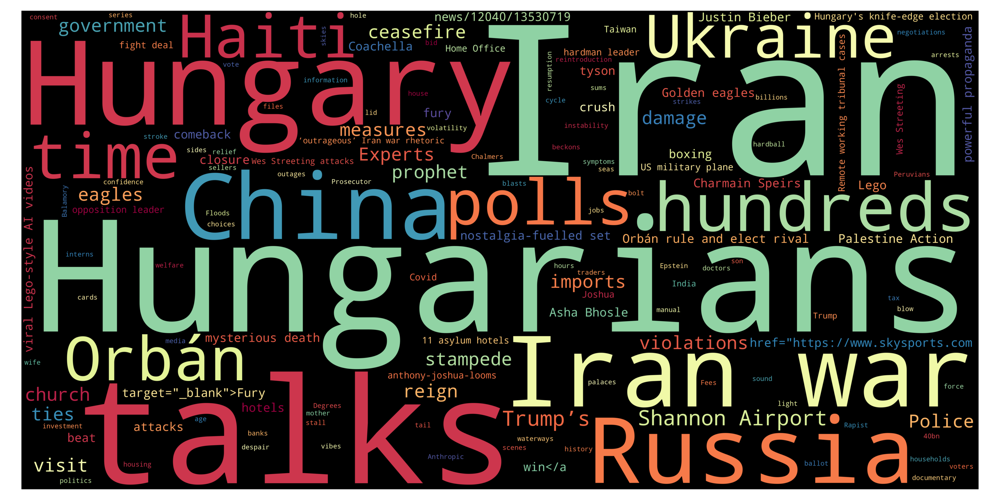
| Term | Frequency |
|---|---|
| iran | 25 |
| talk | 8 |
| trump | 8 |
| hungary | 6 |
| police | 5 |
| hormuz | 5 |
| essex | 5 |
| murder | 4 |
| price | 4 |
| scottish | 4 |
| Term | Frequency |
|---|---|
| iran war | 10 |
| dog attack | 4 |
| asha bhosle | 4 |
| olivier awards | 3 |
| eamonn holmes | 3 |
| naval blockade | 3 |
| primrose hill | 3 |
| chagos islands | 3 |
| scottish independence referendum | 2 |
| air strike | 2 |
| Term | Current day frequency |
|---|---|
| iran war | 10 |
| police | 5 |
| scottish | 4 |
| paddington | 4 |
| asha bhosle | 4 |
| eamonn | 3 |
| oliviers | 3 |
| risk | 3 |
| naval blockade | 3 |
| measure | 3 |
| Term | Difference | Current day frequency | Previous day frequency |
|---|---|---|---|
| iran | 13 | 25 | 12 |
| hormuz | 3 | 5 | 2 |
| talk | 3 | 8 | 5 |
| price | 3 | 4 | 1 |
| murder | 2 | 4 | 2 |
| trump | 2 | 8 | 6 |
| essex | 2 | 5 | 3 |
| hungary | 2 | 6 | 4 |
| election | 2 | 3 | 1 |
| triumph | 1 | 2 | 1 |
| Term | Difference | Current day frequency | Previous day frequency |
|---|---|---|---|
| card | -1 | 1 | 2 |
| suspicion | -1 | 1 | 2 |
| irish | -1 | 3 | 4 |
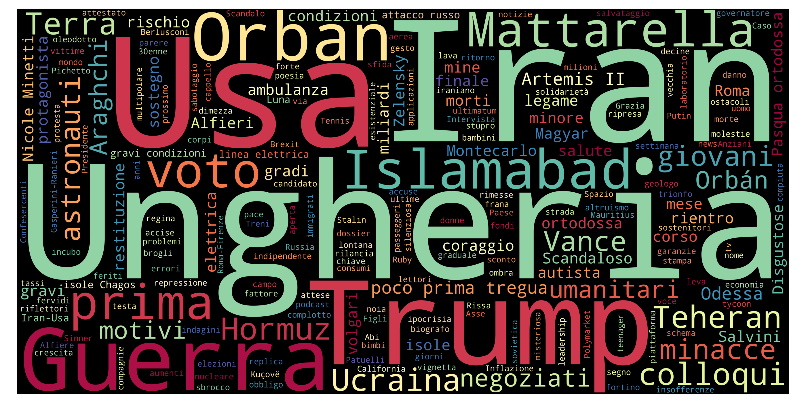
| Term | Frequency |
|---|---|
| ungheria | 12 |
| iran | 11 |
| usa | 9 |
| trump | 8 |
| voto | 8 |
| guerra | 5 |
| primo | 5 |
| hormuz | 5 |
| nave | 4 |
| grave | 4 |
| Term | Frequency |
|---|---|
| leone xiv | 3 |
| artemis ii | 3 |
| navi usa | 2 |
| pasqua ortodossa | 2 |
| new york | 2 |
| feriti gravi | 2 |
| nicole minetti | 2 |
| gravi condizioni | 2 |
| viktor orban campione sovranista | 2 |
| isole chagos | 2 |
| Term | Current day frequency |
|---|---|
| teheran | 4 |
| ferito | 4 |
| terra | 4 |
| umanitare | 3 |
| motivo | 3 |
| artemis ii | 3 |
| astronauta | 3 |
| leone xiv | 3 |
| giorgetti | 3 |
| decina | 2 |
| Term | Difference | Current day frequency | Previous day frequency |
|---|---|---|---|
| ungheria | 7 | 12 | 5 |
| voto | 5 | 8 | 3 |
| primo | 4 | 5 | 1 |
| usa | 4 | 9 | 5 |
| hormuz | 3 | 5 | 2 |
| grave | 3 | 4 | 1 |
| colloquio | 2 | 4 | 2 |
| rischio | 2 | 3 | 1 |
| magyar | 2 | 4 | 2 |
| nave | 2 | 4 | 2 |
| Term | Difference | Current day frequency | Previous day frequency |
|---|---|---|---|
| anno | -6 | 1 | 7 |
| berlusconi | -3 | 1 | 4 |
| polizia | -3 | 1 | 4 |
| negoziato | -3 | 2 | 5 |
| mattarella | -2 | 4 | 6 |
| pasqua ortodossa | -2 | 2 | 4 |
| figlio | -2 | 1 | 3 |
| russia | -1 | 1 | 2 |
| ombra | -1 | 1 | 2 |
| zelensky | -1 | 3 | 4 |
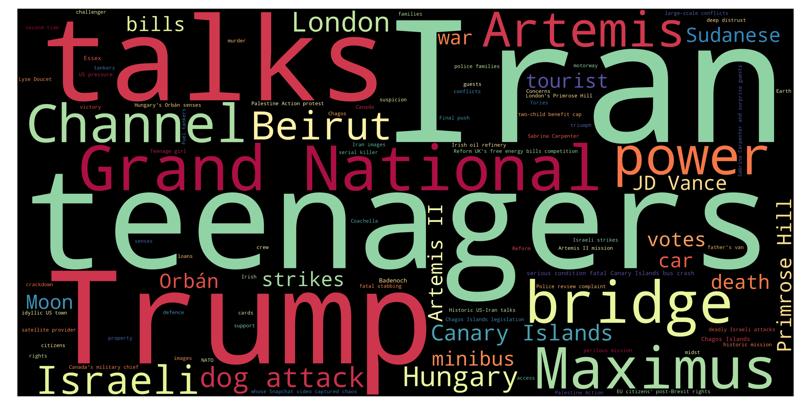
| Term | Frequency |
|---|---|
| iran | 12 |
| trump | 6 |
| talk | 5 |
| teenager | 5 |
| artemis | 5 |
| power | 4 |
| hungary | 4 |
| irish | 4 |
| london | 4 |
| maximus | 3 |
| Term | Frequency |
|---|---|
| palestine action | 6 |
| palestine action protest | 5 |
| grand national | 4 |
| dog attack | 4 |
| jd vance | 3 |
| primrose hill | 3 |
| james bulgers | 3 |
| james bulger grave | 3 |
| second time | 3 |
| chagos islands | 3 |
| Term | Current day frequency |
|---|---|
| palestine action | 6 |
| palestine action protest | 5 |
| artemis | 5 |
| irish | 4 |
| grand national | 4 |
| power | 4 |
| hungary | 4 |
| dog attack | 4 |
| james bulgers | 3 |
| primrose hill | 3 |
| Term | Difference | Current day frequency | Previous day frequency |
|---|---|---|---|
| orbán | 2 | 3 | 1 |
| talk | 1 | 5 | 4 |
| strike | 1 | 3 | 2 |
| teenager | 1 | 5 | 4 |
| tanker | 1 | 2 | 1 |
| citizen | 1 | 2 | 1 |
| death | 1 | 3 | 2 |
| bill | 1 | 3 | 2 |
| crackdown | 1 | 2 | 1 |
| israeli | 1 | 3 | 2 |
| Term | Difference | Current day frequency | Previous day frequency |
|---|---|---|---|
| iran | -8 | 12 | 20 |
| trump | -6 | 6 | 12 |
| medium | -5 | 1 | 6 |
| london | -3 | 4 | 7 |
| murder | -3 | 2 | 5 |
| wife | -2 | 1 | 3 |
| shortage | -2 | 1 | 3 |
| canary islands | -2 | 3 | 5 |
| summer | -1 | 1 | 2 |
| family | -1 | 1 | 2 |
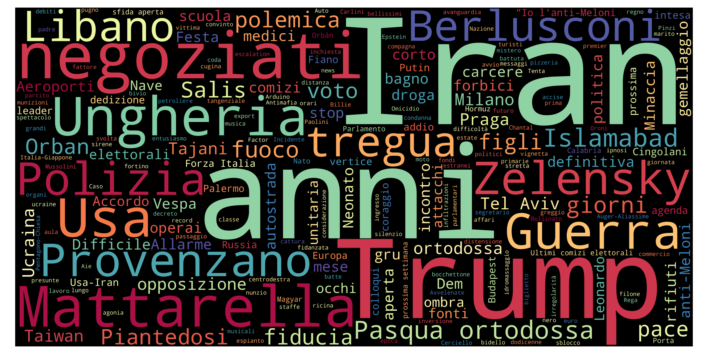
| Term | Frequency |
|---|---|
| iran | 11 |
| anno | 7 |
| trump | 7 |
| mattarella | 6 |
| negoziato | 5 |
| usa | 5 |
| ungheria | 5 |
| guerra | 4 |
| zelensky | 4 |
| provenzano | 4 |
| Term | Frequency |
|---|---|
| pasqua ortodossa | 4 |
| tel aviv | 3 |
| anti meloni | 2 |
| forza italia | 2 |
| ultimi comizi elettorali | 2 |
| sfida aperta | 2 |
| prossima settimana | 2 |
| Term | Current day frequency |
|---|---|
| trump | 7 |
| berlusconi | 4 |
| islamabad | 4 |
| polizia | 4 |
| provenzano | 4 |
| orban | 3 |
| polemica | 3 |
| taiwan | 3 |
| tel aviv | 3 |
| giorno | 3 |
| Term | Difference | Current day frequency | Previous day frequency |
|---|---|---|---|
| anno | 4 | 7 | 3 |
| ungheria | 3 | 5 | 2 |
| negoziato | 3 | 5 | 2 |
| mattarella | 3 | 6 | 3 |
| fiducia | 2 | 3 | 1 |
| figlio | 2 | 3 | 1 |
| salis | 2 | 3 | 1 |
| zelensky | 2 | 4 | 2 |
| voto | 2 | 3 | 1 |
| milano | 1 | 3 | 2 |
| Term | Difference | Current day frequency | Previous day frequency |
|---|---|---|---|
| libano | -10 | 4 | 14 |
| opposizione | -5 | 3 | 8 |
| guerra | -4 | 4 | 8 |
| putin | -4 | 2 | 6 |
| fuoco | -3 | 3 | 6 |
| stabilità | -3 | 1 | 4 |
| ortodosso | -3 | 3 | 6 |
| premier | -3 | 1 | 4 |
| punto | -3 | 1 | 4 |
| usa | -2 | 5 | 7 |
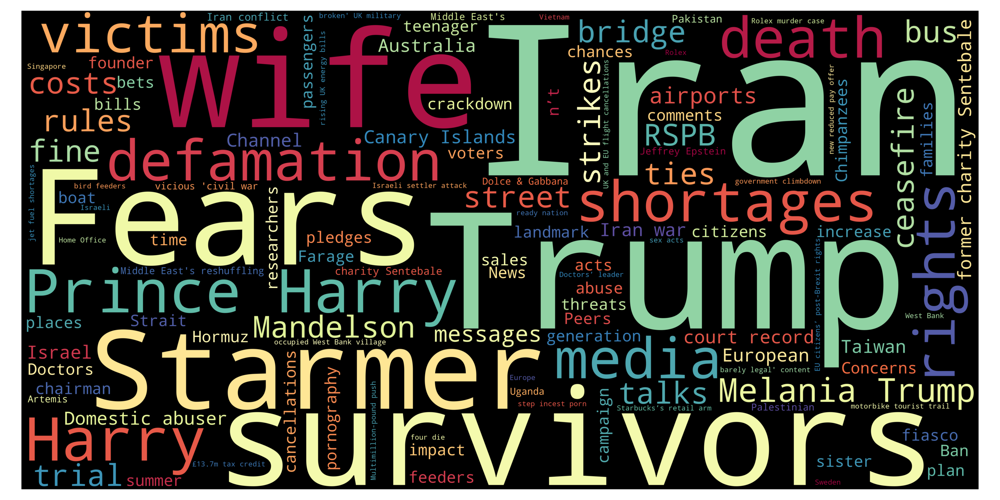
| Term | Frequency |
|---|---|
| iran | 20 |
| trump | 12 |
| london | 7 |
| medium | 6 |
| harry | 6 |
| defamation | 5 |
| murder | 5 |
| trial | 5 |
| israel | 5 |
| talk | 4 |
| Term | Frequency |
|---|---|
| prince harry | 6 |
| canary islands | 5 |
| iran war | 3 |
| chagos islands deal | 3 |
| chagos islands | 3 |
| crispin odey | 3 |
| south london | 3 |
| five sticking points | 2 |
| trump starmer bromance | 2 |
| dolce gabbana | 2 |
| Term | Current day frequency |
|---|---|
| harry | 6 |
| prince harry | 6 |
| trial | 5 |
| defamation | 5 |
| canary islands | 5 |
| murder | 5 |
| teenager | 4 |
| act | 4 |
| comment | 4 |
| taiwan | 3 |
| Term | Difference | Current day frequency | Previous day frequency |
|---|---|---|---|
| trump | 7 | 12 | 5 |
| london | 4 | 7 | 3 |
| medium | 4 | 6 | 2 |
| iran | 3 | 20 | 17 |
| bus | 3 | 4 | 1 |
| rule | 2 | 3 | 1 |
| fear | 2 | 4 | 2 |
| message | 2 | 3 | 1 |
| country | 2 | 3 | 1 |
| victim | 2 | 3 | 1 |
| Term | Difference | Current day frequency | Previous day frequency |
|---|---|---|---|
| lebanon | -10 | 3 | 13 |
| price | -5 | 1 | 6 |
| israel | -5 | 5 | 10 |
| time | -4 | 1 | 5 |
| child | -4 | 1 | 5 |
| strike | -4 | 2 | 6 |
| israeli | -3 | 2 | 5 |
| concern | -2 | 1 | 3 |
| sister | -2 | 1 | 3 |
| bill | -2 | 2 | 4 |
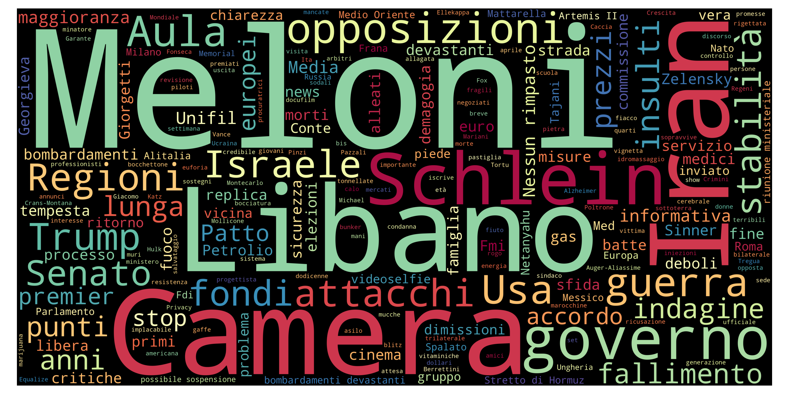
| Term | Frequency |
|---|---|
| meloni | 33 |
| libano | 14 |
| iran | 10 |
| camera | 10 |
| guerra | 8 |
| governo | 8 |
| opposizione | 8 |
| schlein | 7 |
| usa | 7 |
| putin | 6 |
| Term | Frequency |
|---|---|
| nessun rimpasto | 4 |
| pasqua ortodossa | 3 |
| bombardamenti devastanti | 2 |
| melania trump | 2 |
| medio oriente | 2 |
| stretto di hormuz | 2 |
| riunione ministeriale | 2 |
| possibile sospensione | 2 |
| Term | Current day frequency |
|---|---|
| schlein | 7 |
| ortodosso | 6 |
| nessun rimpasto | 4 |
| premier | 4 |
| lungo | 3 |
| tregua | 3 |
| pasqua ortodossa | 3 |
| epstein | 3 |
| devastante | 3 |
| netanyahu | 3 |
| Term | Difference | Current day frequency | Previous day frequency |
|---|---|---|---|
| meloni | 24 | 33 | 9 |
| camera | 8 | 10 | 2 |
| governo | 7 | 8 | 1 |
| opposizione | 7 | 8 | 1 |
| putin | 5 | 6 | 1 |
| stabilità | 3 | 4 | 1 |
| europa | 2 | 4 | 2 |
| patto | 2 | 3 | 1 |
| elezione | 1 | 2 | 1 |
| gas | 1 | 2 | 1 |
| Term | Difference | Current day frequency | Previous day frequency |
|---|---|---|---|
| iran | -8 | 10 | 18 |
| idf | -5 | 1 | 6 |
| regeni | -5 | 1 | 6 |
| film | -4 | 1 | 5 |
| israeliano | -3 | 1 | 4 |
| israele | -3 | 5 | 8 |
| libano | -3 | 14 | 17 |
| negoziato | -2 | 2 | 4 |
| legge | -2 | 1 | 3 |
| primo | -2 | 1 | 3 |
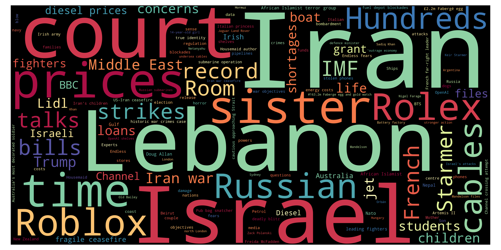
| Term | Frequency |
|---|---|
| iran | 17 |
| lebanon | 13 |
| israel | 10 |
| strike | 6 |
| price | 6 |
| child | 5 |
| time | 5 |
| israeli | 5 |
| roblox | 5 |
| russian | 5 |
| Term | Frequency |
|---|---|
| primrose hill | 4 |
| middle east | 4 |
| melania trump | 3 |
| diesel prices | 3 |
| fragile ceasefire | 3 |
| iran war | 3 |
| old girl | 3 |
| doug allan | 3 |
| israeli strikes | 2 |
| submarine operation | 2 |
| Term | Current day frequency |
|---|---|
| israel | 10 |
| strike | 6 |
| russian | 5 |
| roblox | 5 |
| french | 4 |
| rolex | 4 |
| australia | 4 |
| room | 4 |
| netanyahu | 4 |
| primrose hill | 4 |
| Term | Difference | Current day frequency | Previous day frequency |
|---|---|---|---|
| lebanon | 7 | 13 | 6 |
| time | 3 | 5 | 2 |
| bill | 3 | 4 | 1 |
| child | 3 | 5 | 2 |
| drink | 2 | 3 | 1 |
| israeli | 2 | 5 | 3 |
| shortage | 2 | 3 | 1 |
| attack | 2 | 3 | 1 |
| talk | 2 | 4 | 2 |
| concern | 2 | 3 | 1 |
| Term | Difference | Current day frequency | Previous day frequency |
|---|---|---|---|
| iran | -15 | 17 | 32 |
| dog | -5 | 2 | 7 |
| rspca | -4 | 1 | 5 |
| us iran ceasefire | -4 | 2 | 6 |
| doctor | -3 | 1 | 4 |
| starmer | -3 | 4 | 7 |
| price | -3 | 6 | 9 |
| gulf | -3 | 2 | 5 |
| bbc | -2 | 2 | 4 |
| victim | -2 | 1 | 3 |
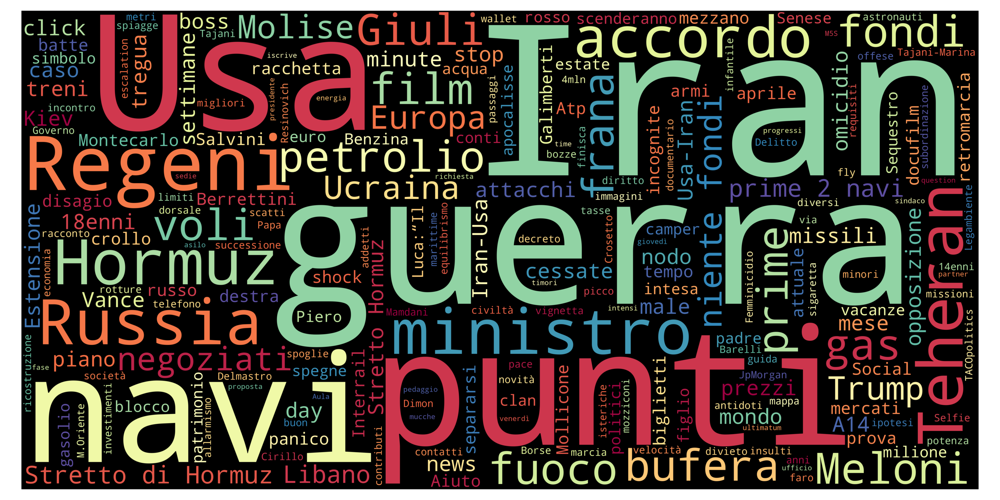
| Term | Frequency |
|---|---|
| iran | 18 |
| libano | 17 |
| meloni | 9 |
| guerra | 8 |
| trump | 8 |
| usa | 8 |
| israele | 8 |
| regeni | 6 |
| giuli | 6 |
| idf | 6 |
| Term | Frequency |
|---|---|
| niente fondi | 3 |
| raid israeliani | 2 |
| artemis ii | 2 |
| tregua iran | 2 |
| sovranità energetica | 2 |
| Term | Current day frequency |
|---|---|
| libano | 17 |
| guerra | 8 |
| punto | 4 |
| unifil | 4 |
| hormuz | 4 |
| negoziato | 4 |
| tajani | 4 |
| hezbollah | 3 |
| ambasciatore | 3 |
| primo | 3 |
| Term | Difference | Current day frequency | Previous day frequency |
|---|---|---|---|
| israele | 6 | 8 | 2 |
| trump | 5 | 8 | 3 |
| idf | 5 | 6 | 1 |
| giuli | 5 | 6 | 1 |
| fuoco | 4 | 5 | 1 |
| fondo | 4 | 5 | 1 |
| meloni | 3 | 9 | 6 |
| film | 3 | 5 | 2 |
| regeni | 3 | 6 | 3 |
| israeliano | 3 | 4 | 1 |
| Term | Difference | Current day frequency | Previous day frequency |
|---|---|---|---|
| crosetto | -8 | 1 | 9 |
| caso | -3 | 1 | 4 |
| vance | -3 | 2 | 5 |
| energia | -3 | 1 | 4 |
| ultimatum | -2 | 1 | 3 |
| europa | -2 | 2 | 4 |
| iran | -2 | 18 | 20 |
| messaggio | -1 | 1 | 2 |
| camera | -1 | 2 | 3 |
| ministero | -1 | 1 | 2 |
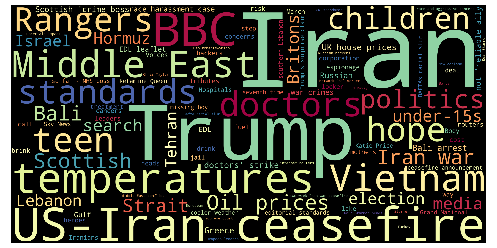
| Term | Frequency |
|---|---|
| iran | 32 |
| price | 9 |
| dog | 7 |
| temperature | 7 |
| starmer | 7 |
| trump | 7 |
| lebanon | 6 |
| rspca | 5 |
| gulf | 5 |
| million | 4 |
| Term | Frequency |
|---|---|
| us iran ceasefire | 6 |
| middle east | 5 |
| channel 4 | 4 |
| iran war | 4 |
| israeli strikes | 3 |
| doctors strike | 3 |
| jd vance | 3 |
| oil prices | 3 |
| marjorie taylor greene | 3 |
| large wave | 2 |
| Term | Current day frequency |
|---|---|
| dog | 7 |
| us iran ceasefire | 6 |
| rspca | 5 |
| gulf | 5 |
| middle east | 5 |
| hormuz | 4 |
| vietnam | 4 |
| election | 4 |
| channel 4 | 4 |
| oil prices | 3 |
| Term | Difference | Current day frequency | Previous day frequency |
|---|---|---|---|
| price | 7 | 9 | 2 |
| iran | 7 | 32 | 25 |
| lebanon | 4 | 6 | 2 |
| starmer | 3 | 7 | 4 |
| million | 3 | 4 | 1 |
| teen | 2 | 3 | 1 |
| temperature | 2 | 7 | 5 |
| politic | 2 | 3 | 1 |
| hospital | 1 | 2 | 1 |
| pressure | 1 | 2 | 1 |
| Term | Difference | Current day frequency | Previous day frequency |
|---|---|---|---|
| trump | -6 | 7 | 13 |
| basis | -4 | 1 | 5 |
| court | -4 | 1 | 5 |
| way | -3 | 1 | 4 |
| israeli | -3 | 3 | 6 |
| bbc | -3 | 4 | 7 |
| dock | -3 | 1 | 4 |
| iran war | -2 | 4 | 6 |
| leader | -2 | 1 | 3 |
| war crimes | -2 | 2 | 4 |
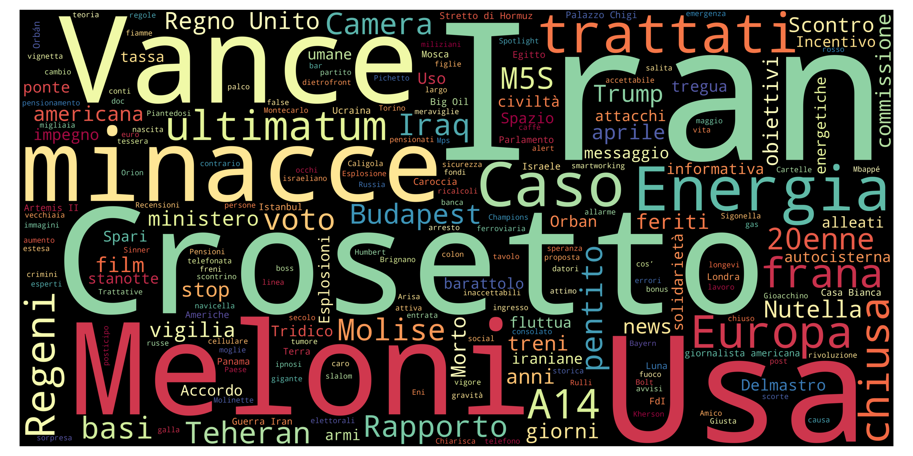
| Term | Frequency |
|---|---|
| iran | 20 |
| crosetto | 9 |
| usa | 9 |
| meloni | 6 |
| vance | 5 |
| minaccia | 4 |
| energia | 4 |
| caso | 4 |
| trattato | 4 |
| europa | 4 |
| Term | Frequency |
|---|---|
| regno unito | 3 |
| giornalista americana | 2 |
| stretto di hormuz | 2 |
| artemis ii | 2 |
| palazzo chigi | 2 |
| guerra iran | 2 |
| casa bianca | 2 |
| big oil | 2 |
| Term | Current day frequency |
|---|---|
| crosetto | 9 |
| vance | 5 |
| energia | 4 |
| caso | 4 |
| trattato | 4 |
| molise | 3 |
| a14 | 3 |
| rapporto | 3 |
| regno unito | 3 |
| voto | 3 |
| Term | Difference | Current day frequency | Previous day frequency |
|---|---|---|---|
| usa | 6 | 9 | 3 |
| iran | 5 | 20 | 15 |
| meloni | 4 | 6 | 2 |
| minaccia | 3 | 4 | 1 |
| europa | 2 | 4 | 2 |
| teheran | 1 | 3 | 2 |
| attacco | 1 | 2 | 1 |
| terra | 1 | 2 | 1 |
| umano | 1 | 2 | 1 |
| orban | 1 | 2 | 1 |
| Term | Difference | Current day frequency | Previous day frequency |
|---|---|---|---|
| tregua | -3 | 2 | 5 |
| energetico | -2 | 2 | 4 |
| drone | -1 | 1 | 2 |
| vigore | -1 | 1 | 2 |
| petrolio | -1 | 1 | 2 |
| prezzo | -1 | 1 | 2 |
| israeliano | -1 | 1 | 2 |
| notte | -1 | 1 | 2 |
| governo | -1 | 1 | 2 |
| artemis ii | -1 | 2 | 3 |
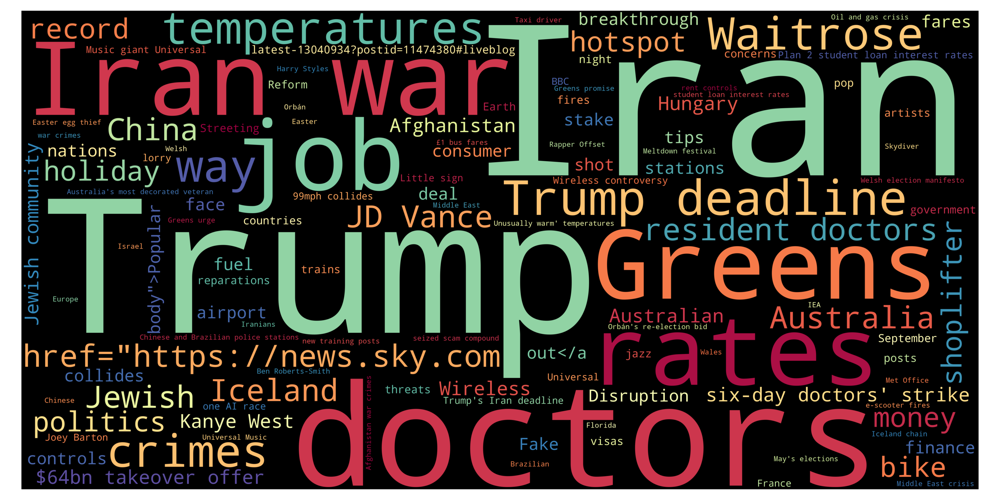
| Term | Frequency |
|---|---|
| iran | 25 |
| trump | 13 |
| threat | 7 |
| bbc | 7 |
| reparation | 6 |
| israeli | 6 |
| australia | 6 |
| temperature | 5 |
| visa | 5 |
| court | 5 |
| Term | Frequency |
|---|---|
| kanye west | 11 |
| wireless festival | 7 |
| iran war | 6 |
| joey barton | 4 |
| hms dragon docks | 4 |
| war crimes | 4 |
| human chains | 3 |
| power plants | 3 |
| ex footballer joey barton | 3 |
| jd vance | 3 |
| Term | Current day frequency |
|---|---|
| threat | 7 |
| bbc | 7 |
| wireless festival | 7 |
| reparation | 6 |
| visa | 5 |
| basis | 5 |
| court | 5 |
| dock | 4 |
| hms dragon docks | 4 |
| war crimes | 4 |
| Term | Difference | Current day frequency | Previous day frequency |
|---|---|---|---|
| iran | 10 | 25 | 15 |
| kanye west | 5 | 11 | 6 |
| israeli | 4 | 6 | 2 |
| australia | 4 | 6 | 2 |
| temperature | 3 | 5 | 2 |
| trump | 3 | 13 | 10 |
| iran war | 3 | 6 | 3 |
| way | 2 | 4 | 2 |
| doctor | 2 | 4 | 2 |
| starmer | 2 | 4 | 2 |
| Term | Difference | Current day frequency | Previous day frequency |
|---|---|---|---|
| tory | -3 | 1 | 4 |
| firm | -2 | 1 | 3 |
| price | -1 | 2 | 3 |
| london | -1 | 3 | 4 |
| school | -1 | 1 | 2 |
| pressure | -1 | 1 | 2 |
| nhs | -1 | 2 | 3 |
| crash | -1 | 1 | 2 |
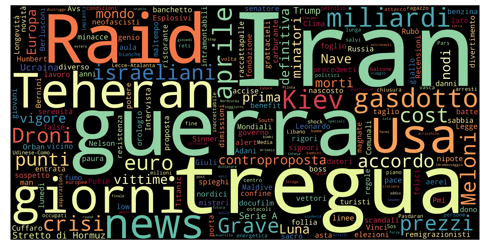
| Term | Frequency |
|---|---|
| iran | 15 |
| guerra | 7 |
| tregua | 5 |
| raid | 4 |
| energetico | 4 |
| primo | 3 |
| trump | 3 |
| usa | 3 |
| news | 2 |
| petrolio | 2 |
| Term | Frequency |
|---|---|
| serie a | 3 |
| artemis ii | 3 |
| quattro ore | 2 |
| crisi energetica | 2 |
| stretto di hormuz | 2 |
| serie turno | 2 |
| Term | Current day frequency |
|---|---|
| tregua | 5 |
| artemis ii | 3 |
| giorno | 2 |
| minatore | 2 |
| notte | 2 |
| gasdotto | 2 |
| kiev | 2 |
| pasdaran | 2 |
| euro | 2 |
| israeliano | 2 |
| Term | Difference | Current day frequency | Previous day frequency |
|---|---|---|---|
| iran | 3 | 15 | 12 |
| energetico | 3 | 4 | 1 |
| primo | 2 | 3 | 1 |
| drone | 1 | 2 | 1 |
| guerra | 1 | 7 | 6 |
| petrolio | 1 | 2 | 1 |
| prezzo | 1 | 2 | 1 |
| vittima | 1 | 2 | 1 |
| miliardo | 1 | 2 | 1 |
| ucraina | 1 | 2 | 1 |
| Term | Difference | Current day frequency | Previous day frequency |
|---|---|---|---|
| pasqua | -11 | 1 | 12 |
| usa | -10 | 3 | 13 |
| pace | -5 | 1 | 6 |
| trump | -2 | 3 | 5 |
| aereo | -2 | 1 | 3 |
| intesa | -1 | 1 | 2 |
| luna | -1 | 2 | 3 |
| lungo | -1 | 1 | 2 |
| estero | -1 | 1 | 2 |
| condizione | -1 | 1 | 2 |
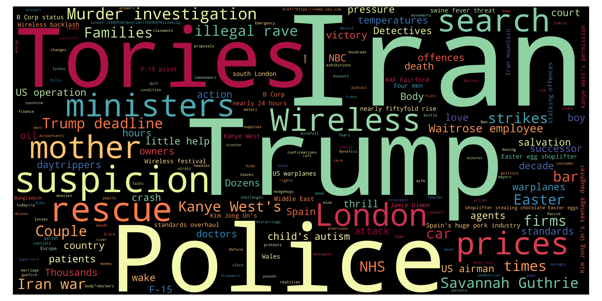
| Term | Frequency |
|---|---|
| iran | 15 |
| trump | 10 |
| suspicion | 7 |
| police | 5 |
| strike | 5 |
| mother | 4 |
| search | 4 |
| tory | 4 |
| decision | 4 |
| london | 4 |
| Term | Frequency |
|---|---|
| kanye west | 6 |
| murder investigation | 4 |
| wireless festival boss | 3 |
| savannah guthrie | 3 |
| illegal rave | 3 |
| trump deadline | 3 |
| waitrose employee | 3 |
| iran war | 3 |
| steve hilton | 2 |
| ex political aide | 2 |
| Term | Current day frequency |
|---|---|
| strike | 5 |
| tory | 4 |
| mother | 4 |
| murder investigation | 4 |
| decision | 4 |
| easter | 3 |
| california | 3 |
| record | 3 |
| savannah guthrie | 3 |
| nhs | 3 |
| Term | Difference | Current day frequency | Previous day frequency |
|---|---|---|---|
| trump | 7 | 10 | 3 |
| suspicion | 5 | 7 | 2 |
| police | 4 | 5 | 1 |
| search | 3 | 4 | 1 |
| london | 2 | 4 | 2 |
| price | 2 | 3 | 1 |
| time | 1 | 3 | 2 |
| car | 1 | 3 | 2 |
| minister | 1 | 2 | 1 |
| way | 1 | 2 | 1 |
| Term | Difference | Current day frequency | Previous day frequency |
|---|---|---|---|
| family | -3 | 1 | 4 |
| hormuz | -2 | 2 | 4 |
| election | -2 | 1 | 3 |
| thousand | -2 | 1 | 3 |
| country | -1 | 2 | 3 |
| iran war | -1 | 3 | 4 |
| rescue | -1 | 3 | 4 |
| ban | -1 | 1 | 2 |
| right | -1 | 1 | 2 |
| attack | -1 | 2 | 3 |
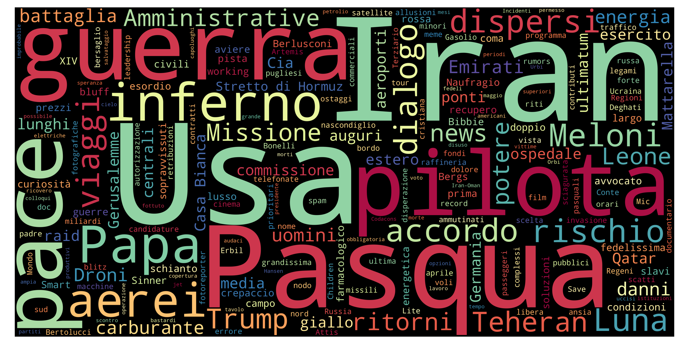
| Term | Frequency |
|---|---|
| usa | 13 |
| pasqua | 12 |
| iran | 12 |
| guerra | 6 |
| pace | 6 |
| pilota | 6 |
| inferno | 5 |
| trump | 5 |
| papa | 4 |
| raid | 4 |
| Term | Frequency |
|---|---|
| serie a | 3 |
| sergio mattarella | 2 |
| santo sepolcro | 2 |
| casa bianca | 2 |
| a il | 1 |
| Term | Current day frequency |
|---|---|
| pace | 6 |
| raid | 4 |
| germania | 4 |
| disperso | 3 |
| ultimatum | 3 |
| serie a | 3 |
| giallo | 2 |
| uovo | 2 |
| lavoro | 2 |
| casa bianca | 2 |
| Term | Difference | Current day frequency | Previous day frequency |
|---|---|---|---|
| pasqua | 8 | 12 | 4 |
| usa | 6 | 13 | 7 |
| inferno | 2 | 5 | 3 |
| aereo | 2 | 3 | 1 |
| teheran | 1 | 3 | 2 |
| luna | 1 | 3 | 2 |
| iran | 1 | 12 | 11 |
| gerusalemme | 1 | 3 | 2 |
| intesa | 1 | 2 | 1 |
| papa | 1 | 4 | 3 |
| Term | Difference | Current day frequency | Previous day frequency |
|---|---|---|---|
| meloni | -9 | 1 | 10 |
| trump | -5 | 5 | 10 |
| guerra | -4 | 6 | 10 |
| energetico | -3 | 1 | 4 |
| hormuz | -3 | 1 | 4 |
| emirato | -2 | 1 | 3 |
| rischio | -2 | 2 | 4 |
| missile | -2 | 1 | 3 |
| americano | -2 | 1 | 3 |
| russo | -2 | 1 | 3 |
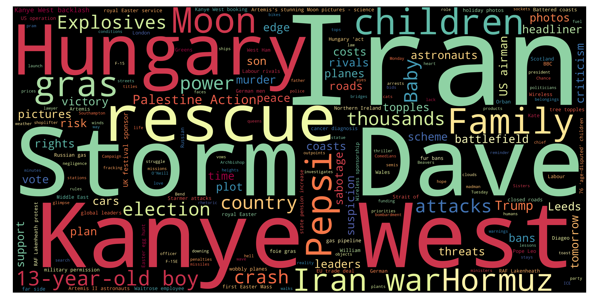
| Term | Frequency |
|---|---|
| iran | 16 |
| hungary | 5 |
| rescue | 4 |
| family | 4 |
| child | 4 |
| pepsi | 4 |
| moon | 4 |
| hormuz | 4 |
| election | 3 |
| crash | 3 |
| Term | Frequency |
|---|---|
| storm dave | 7 |
| kanye west | 6 |
| iran war | 4 |
| old boy | 4 |
| palestine action | 3 |
| us airman | 2 |
| kanye west backlash | 2 |
| festival sponsor | 2 |
| artemis stunning moon pictures science | 2 |
| holiday photos | 2 |
| Term | Current day frequency |
|---|---|
| kanye west | 6 |
| hungary | 5 |
| child | 4 |
| old boy | 4 |
| iran war | 4 |
| pepsi | 4 |
| family | 4 |
| election | 3 |
| power | 3 |
| attack | 3 |
| Term | Difference | Current day frequency | Previous day frequency |
|---|---|---|---|
| rescue | 2 | 4 | 2 |
| moon | 2 | 4 | 2 |
| rival | 1 | 2 | 1 |
| hormuz | 1 | 4 | 3 |
| road | 1 | 2 | 1 |
| iran | 1 | 16 | 15 |
| plan | 1 | 2 | 1 |
| victory | 1 | 2 | 1 |
| Term | Difference | Current day frequency | Previous day frequency |
|---|---|---|---|
| trump | -6 | 3 | 9 |
| murder | -4 | 2 | 6 |
| time | -2 | 2 | 4 |
| wind | -2 | 1 | 3 |
| rule | -2 | 1 | 3 |
| ship | -1 | 1 | 2 |
| stay | -1 | 1 | 2 |
| suspicion | -1 | 2 | 3 |
| weather | -1 | 1 | 2 |
| arrest | -1 | 1 | 2 |